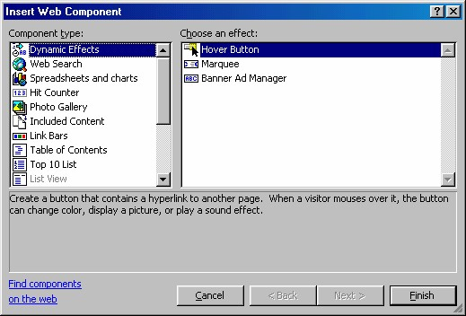
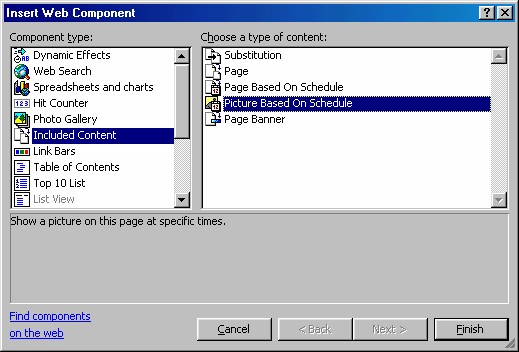
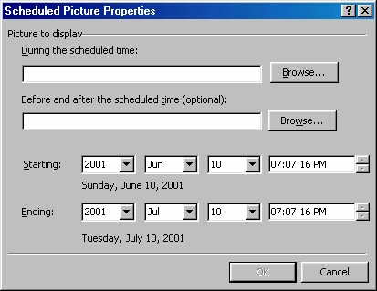
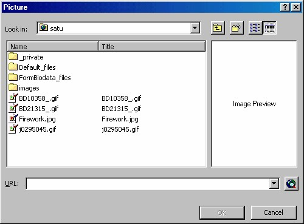

6 Gambar terjadwal
Dengan salah satu Web Component FrontPage XP, Anda bisa menampilkan sebuah
gambar pada waktu dan tanggal tertentu.
Misalnya perusahaan Anda memiliki sebuah promosi yang akan dimulai pada hari
tertentu dan jam tertentu, Anda dapat mengatur halaman itu sehingga sebuah gambar
baru akan ditampilkan pada waktu tersebut. Nah, Web Component bisa
menolongnya.
Kalau Anda memiliki halaman web pribadi, Anda dapat menggunakan alat tersebut
untuk mengatur penampilan gambar wisat untuk hari libur, gambar badut pada saat
ulang tahun anak Anda, dan sebagainya.
Beginilah cara pengaturannya:
1. Tempatkan kursor pada tempat yang Anda inginkan.
2. Aktifkan pilihan Insert _ Web Component. Kotak dialog Insert Web
Component akan terbuka.

Gambar 7.47 Kotak dialog Insert Web Component
3. Pada bidang kiri pilih Included Content dan pada bidang kanan pilihlah
Picture Based on Schedule, lihat Gambar 7.48.

Gambar 7.48 Kotak dialog Insert Web Component
4. Klik Finish, muncul kotak dialog penjadwalan tampilnya gambar.

Gambar 7.49 Kotak dialog Scheduled Picture properties
5. Klik tombol Browse yang pertama untuk memilih gambar yang ingin Anda
tampilkan pada waktu dan tanggal yang Anda inginkan. Anda hanya dapat
memilih sebuah gambar yang sudah ada pada web Anda.

Gambar 7.50 Kotak dialog Picture
6. Masukkan Starting Date and Time , untuk menjadwalkan kapan gambar
tersebut akan mulai muncul pada halaman Anda.
7. Masukkan Ending Date and Time untuk menjadwalkan kapan gambar
tersebut akan dikeluarkan dari halaman Anda.
8. Anda juga bisa mengklik tombol Browse ke-2 untuk memilih gambar
pengganti yang akan ditampilkan sebelum gambar terjadwal muncul pada
halaman, dan sesudah gambar tersebut dipindahkan.
9. Klik OK dan sebuah icon Broken Picture akan ditampilkan di tempat gambar
tersebut, atau mungkin gambarnya sendiri, jika Starting Date dan Time
sudah lewat.
Copyright © Herlan Lesmana
Created with the Freeware Edition of HelpNDoc: Easily create Web Help sites